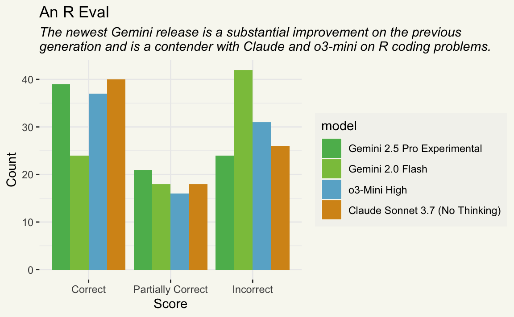

library(ellmer)
gemini_2_5_pro <- chat_gemini(model = "gemini-2.5-pro-exp-03-25")
gemini_2_0_flash <- chat_gemini(model = "gemini-2.0-flash")
o3_mini_high <- chat_openai(
model = "o3-mini",
api_args = list(reasoning_effort = "high")
)
claude_sonnet_3_7 <- chat_claude(model = "claude-3-7-sonnet-latest")Since Gemini 2.5 Pro Experimental’s release last week, I’ve been seeing a lot of hype claiming that the model is the new state of the art. I’ve been wondering—how good is this model at writing R code?
As it happens, I’ve been working on a new tool for large language model evaluation in R. The package is still pretty early on in it’s development, but I figured this might be a good opportunity to kick the tires publicly.
tl;dr:
- Gemini 2.5 Pro is definitely an improvement over Gemini 2.0 Flash.
- Gemini 2.5 Pro seems “up there” with Claude Sonnet 3.7 and o3-Mini High.
- If Gemini 2.5 Pro ends up being as cheap as Gemini 2.0 Flash over the API, I would seriously consider transitioning to Gemini for most of what I currently use Claude for.
Introducing rinspect
rinspect is an R port of the widely adopted Python framework Inspect. While the package doesn’t integrate with Inspect directly, it allows users to interface with the Inspect log viewer and shares much of its grammar and philosophy.
rinspect describes LLM evals in three core components:
-
Datasets contain a set of labelled samples. Datasets are just a tibble with columns
inputandtarget, whereinputis a prompt andtargetis either literal value(s) or grading guidance. -
Solvers evaluate the
inputin the dataset and produce a final result (hopefully) approximatingtarget. In rinspect, the simplest solver is just an ellmer chat (e.g.ellmer::chat_claude()) wrapped ingenerate(), i.e.generate(ellmer::chat_claude())), which will call the Chat object’s$chat()method and return whatever it returns. -
Scorers evaluate the final output of solvers. They may use text comparisons, model grading, or other custom schemes to determine how well the solver approximated the
targetbased on theinput.
In this blog post, we’ll apply a solver powered by four different models to a dataset of R coding problems. Google’s Gemini 2.5 Pro Experimental will be the first. We’ll compare that model to its previous generation, Gemini 2.0 Flash. Otherwise, it’s a bit difficult to determine reasonable “peers” to the model without knowing what the model’s API cost will be, but we could use OpenAI’s o3-mini-high and Anthropic’s Claude Sonnet 3.7 Extended Thinking as peer models since Google used them in the linked release post. We’ll then use the same scorer to evaluate how well each model performed.
Important
I was unable to get Claude Sonnet 3.7’s “thinking” enabled properly with ellmer; an apples-to-apples comparison would use that setting.
In ellmer, here’s how we define those model connections:
Note that I needed to configure a GOOGLE_API_KEY, OPENAI_API_KEY, and ANTHROPIC_API_KEY to connect to these models, respectively. Gemini 2.5 Pro Experimental is currently free but heavily rate-limited. Here are the prices per million tokens for the other models1:
# A tibble: 3 × 3
Name Input Output
<chr> <chr> <chr>
1 Gemini 2.0 Flash $0.10 $0.40
2 ChatGPT o3-mini $1.10 $4.40
3 Claude 3.7 Sonnet $3.00 $15.00An R Eval dataset
We’ll use a dataset that ships with rinspect called are, or “An R Eval.” From the are docs:
An R Eval is a dataset of challenging R coding problems. Each
inputis a question about R code which could be solved on first-read only by human experts and, with a chance to read documentation and run some code, by fluent data scientists. Solutions are intargetand enable a fluent data scientist to evaluate whether the solution deserves full, partial, or no credit.
glimpse(are)Rows: 28
Columns: 7
$ title <chr> "after-stat-bar-heights", "conditional-grouped-sum…
$ input <chr> "This bar chart shows the count of different cuts …
$ target <chr> "Preferably: \n\n```\nggplot(data = diamonds) + \n…
$ domain <chr> "Data analysis", "Data analysis", "Data analysis",…
$ task <chr> "New code", "New code", "New code", "Debugging", "…
$ source <chr> "https://jrnold.github.io/r4ds-exercise-solutions/…
$ knowledge <list> "tidyverse", "tidyverse", "tidyverse", "r-lib", "…At a high level:
-
title: A unique identifier for the problem. -
input: The question to be answered. -
target: The solution, often with a description of notable features of a correct solution. -
domain,task, andknowledgeare pieces of metadata describing the kind of R coding challenge. -
source: Where the problem came from, as a URL. Many of these coding problems are adapted “from the wild” and include the kinds of context usually available to those answering questions.
For the purposes of actually carrying out the initial evaluation, we’re specifically interested in the input and target columns. Let’s print out the first entry in full so you can get a taste of a typical problem in this dataset:
cat(are$input[1])This bar chart shows the count of different cuts of diamonds,
and each bar is stacked and filled according to clarity:
```
ggplot(data = diamonds) +
geom_bar(mapping = aes(x = cut, fill = clarity))
```
Could you change this code so that the proportion of diamonds
with a given cut corresponds to the bar height and not the
count? Each bar should still be filled according to clarity.Here’s the suggested solution:
cat(are$target[1])Preferably:
```
ggplot(data = diamonds) +
geom_bar(aes(x = cut, y = after_stat(count) /
sum(after_stat(count)), fill = clarity))
```
The dot-dot notation (`..count..`) was deprecated in ggplot2
3.4.0, but it still works:
```
ggplot(data = diamonds) +
geom_bar(aes(x = cut, y = ..count.. / sum(..count..), fill =
clarity))
```
Simply setting `position = "fill" will result in each bar
having a height of 1 and is not correct.For now, are was publicly shared after the knowledge cutoff of each of these models, so the answers to these questions (likely) aren’t yet incorporated into the models’ weights.
Evaluating Gemini
LLM evaluation with rinspect happens in two main steps:
First, use Task$new() to situate a dataset, solver, and scorer in a Task. Tasks are R6 objects that define important methods and data structures for LLM evaluation. Below, I use generate() as a solver, currently the only built-in solver supplied by the package. Think of it like Chat objects’ $chat() method with some bells and whistles—parallel requests, some nice progress functionality, and lots of logging. generate() returns a function that has one argument, solver_chat, which takes an ellmer Chat; you can set a default Chat by supplying it to generate() itself. The scorer, model_graded_qa(), uses model grading (or “LLM-as-a-judge”) to score the solver’s responses. Different models exhibit different behaviors as judges, so I use the same model (Claude Sonnet 3.7) as the judge regardless of which model is being evaluated.
are_task <- Task$new(
dataset = are,
solver = generate(),
scorer = model_graded_qa(
scorer_chat = claude_sonnet_3_7,
partial_credit = TRUE
),
name = "An R Eval"
)
are_taskAn evaluation task An R Eval.Second, use Task$eval() to evaluate the solver, evaluate the scorer, and then explore a persistent log of the results in an interactive viewer.
are_task_gemini_2_5 <- are_task$clone()
are_task_gemini_2_5$eval(
solver_chat = gemini_2_5_pro,
epochs = 3
)
Note
You can also run $eval() step-by-step, if you want; $eval() just calls $solve(), $score(), $log(), and $view() in sequence.
After evaluation, the task contains information from the solving and scoring steps. Here’s what the model responded to that first question with:
cat(are_task_gemini_2_5$samples$result[1])Okay, you can achieve this by changing the `position` argument
within `geom_bar`. The default is `"stack"`, which stacks the
raw counts. You want `"fill"`, which stacks the proportions so
that each bar sums to 1 (or 100%).
Here's the modified code:
```R
# Load the ggplot2 library if you haven't already
# library(ggplot2)
# The diamonds dataset is built into ggplot2
ggplot(data = diamonds) +
geom_bar(mapping = aes(x = cut, fill = clarity), position =
"fill") +
labs(y = "Proportion", title = "Proportion of Clarity Levels
within each Diamond Cut") # Optional: Add informative labels
```
**Explanation:**
1. `ggplot(data = diamonds)`: Initializes the plot using the
`diamonds` dataset.
2. `geom_bar(...)`: Specifies that you want a bar chart.
3. `mapping = aes(x = cut, fill = clarity)`: Maps the `cut`
variable to the x-axis and the `clarity` variable to the fill
color of the bars.
4. `position = "fill"`: This is the key change. It tells
`geom_bar` to calculate the count for each `fill` category
(clarity) within each `x` category (cut), but then normalizes
these counts so that the total height of each bar represents 1
(or 100%). The segments within the bar then show the
*proportion* of each clarity level for that specific cut.
5. `labs(y = "Proportion", ...)`: (Optional but recommended)
Changes the default y-axis label from "count" to "Proportion"
to accurately reflect what the axis now represents, and adds a
title.Then, since we’ve supplied model_graded_qa() as the scorer, Claude Sonnet 3.7 will be supplied the input question, the grading guidance, and the solver’s output, and asked to determine whether the solution is incorrect, partially correct, or correct. Here’s Claude’s grading transcript for the solver’s first answer:
cat(are_task_gemini_2_5$samples$scorer_chat[[1]]$last_turn()@text)I need to assess whether the submitted answer meets the
criterion, which specifies that the proportion of diamonds
with a given cut should correspond to the bar height.
The criterion clearly states that the correct approach is to
use:
```
ggplot(data = diamonds) +
geom_bar(aes(x = cut, y = after_stat(count) /
sum(after_stat(count)), fill = clarity))
```
The submission instead recommends using:
```
ggplot(data = diamonds) +
geom_bar(mapping = aes(x = cut, fill = clarity), position =
"fill")
```
The criterion explicitly states that "Simply setting `position
= "fill"` will result in each bar having a height of 1 and is
not correct." This is because `position = "fill"` normalizes
within each cut category, making each bar the same height
(1.0), with the segments showing the proportions of clarity
within each cut.
In contrast, the approach specified in the criterion uses
`after_stat(count) / sum(after_stat(count))` to calculate the
proportion of each cut relative to the total number of
diamonds. This ensures that the bar heights represent the
proportion of diamonds with each cut, while still maintaining
the clarity breakdown within each bar.
Since the submission provides a solution that contradicts what
the criterion explicitly identifies as incorrect, the answer
does not meet the requirements.
GRADE: Irinspect ships with the Inspect Log Viewer, a small .js app that allows you to interactively explore evaluation logs. Especially the first few times you run an eval, the tool is super helpful for uncovering unexpected behavior in solving and scoring. I’ve embedded the viewer in this post so you can check out the problems in An R Eval and how effectively Gemini 2.5 Pro Experimental handled them:
I’d encourage you to poke around in this app! You’ll certainly see some bugs that I’ve still yet to work out and some surprising behavior from the scorer, but there’s lots to be learned about how these models work from evaluation logs.
Evaluating Comparison Models
We can evaluate the remaining models by cloning the original task and running $eval() with a new solver chat. First, to evaluate the previous Gemini generation, Gemini 2.0 Flash:
are_task_gemini_2_0 <- are_task$clone()
are_task_gemini_2_0$eval(
solver_chat = gemini_2_0_flash,
epochs = 3
)For o3-mini high:
are_task_o3_mini_high <- are_task$clone()
are_task_o3_mini_high$eval(
solver_chat = o3_mini_high,
epochs = 3
)Finally, for Claude Sonnet 3.7:
are_task_claude_sonnet_3_7 <- are_task$clone()
are_task_claude_sonnet_3_7$eval(
solver_chat = claude_sonnet_3_7,
epochs = 3
)I’ve also situated the logs for both of the above evaluations in the above app—just click the three stacked bars in the top right of the app to check out the logs for 2.0 Flash, o3-mini and Sonnet 3.7.
Analysis
At evaluation time, rinspect does a naive accuracy calculation that you can see displayed in the app, but in general is quite restrained in its analysis functionality. Instead, the package aims to get analysts to Happy Data Frame Land as quickly as possible using inspect_bind():
are_eval <-
inspect_bind(
`Gemini 2.5 Pro Experimental` = are_task_gemini_2_5,
`Gemini 2.0 Flash` = are_task_gemini_2_0,
`o3-Mini High` = are_task_o3_mini_high,
`Claude Sonnet 3.7 (No Thinking)` = are_task_claude_sonnet_3_7,
) %>%
rename(model = task) %>%
mutate(
model = factor(model, levels = c(
"Gemini 2.5 Pro Experimental",
"Gemini 2.0 Flash",
"o3-Mini High",
"Claude Sonnet 3.7 (No Thinking)"
))
)
are_eval# A tibble: 336 × 5
model id epoch score metadata
<fct> <int> <int> <ord> <list>
1 Gemini 2.5 Pro Experimental 1 1 I <tibble [1 × 11]>
2 Gemini 2.5 Pro Experimental 1 2 I <tibble [1 × 11]>
3 Gemini 2.5 Pro Experimental 1 3 I <tibble [1 × 11]>
4 Gemini 2.5 Pro Experimental 2 1 I <tibble [1 × 11]>
5 Gemini 2.5 Pro Experimental 2 2 P <tibble [1 × 11]>
6 Gemini 2.5 Pro Experimental 2 3 I <tibble [1 × 11]>
7 Gemini 2.5 Pro Experimental 3 1 C <tibble [1 × 11]>
8 Gemini 2.5 Pro Experimental 3 2 C <tibble [1 × 11]>
9 Gemini 2.5 Pro Experimental 3 3 P <tibble [1 × 11]>
10 Gemini 2.5 Pro Experimental 4 1 I <tibble [1 × 11]>
# ℹ 326 more rowsIn this dataset, each row represents a single time a solver is invoked to answer a question:
modelgives the model used to solve a given questionidgives the question idepochidentifies the run/resample of the given questionscoresshows whether the scoring model (Claude Sonnet 3.7) identified the solver’s answer as Incorrect, Partially Correct, or Correct. It’s an ordinal factor withI < P < C.metadatais a list column containing just about all of the information that rinspect collects during the evaluation process.
We’re interested in which of these three models are right more often. We have 28 unique questions, each resampled across 3 epochs for each of 4 models. For a cursory analysis, we could do the canonical Bar Chart Dodged By Model visualization:
are_eval %>%
mutate(
score = fct_rev(score),
score = fct_recode(
score,
"Correct" = "C", "Partially Correct" = "P", "Incorrect" = "I"
)
) %>%
ggplot(aes(x = score, fill = model)) +
geom_bar(position = "dodge") +
scale_fill_manual(values = c(
"Gemini 2.5 Pro Experimental" = "#5CB85C",
"Gemini 2.0 Flash" = "#8BC34A",
"o3-Mini High" = "#69b1cf",
"Claude Sonnet 3.7 (No Thinking)" = "#d6941a"
)) +
labs(
x = "Score", y = "Count",
title = "An R Eval",
subtitle =
"The newest Gemini release is a substantial improvement on the previous\ngeneration and is a contender with Claude and o3-mini on R coding problems."
) +
theme(plot.subtitle = element_text(face = "italic"))
Could the differences we’re seeing be attributed to random noise, though? We can use a hierarchical modeling technique called a mixed model to model the probability of each score (i.e., correct, etc.) as a function of the LLM. In this case, observations are not independent; some questions may be harder than others, and we’re repeating each question multiple times since we’ve set epochs = 3. A random intercept on the question id can help account for this variation. Since score is ordinal, we use a cumulative link mixed model rather than the usual suspect lme4::glmer():
summary(are_mod)Cumulative Link Mixed Model fitted with the Laplace approximation
formula: score ~ model + (1 | id)
data: are_eval
link threshold nobs logLik AIC niter max.grad cond.H
logit flexible 336 -257.80 527.59 213(1039) 1.59e-04 4.6e+01
Random effects:
Groups Name Variance Std.Dev.
id (Intercept) 7.561 2.75
Number of groups: id 28
Coefficients:
Estimate Std. Error z value
modelGemini 2.0 Flash -1.48455 0.38106 -3.896
modelo3-Mini High -0.29653 0.37041 -0.801
modelClaude Sonnet 3.7 (No Thinking) -0.04314 0.36520 -0.118
Pr(>|z|)
modelGemini 2.0 Flash 9.79e-05 ***
modelo3-Mini High 0.423
modelClaude Sonnet 3.7 (No Thinking) 0.906
---
Signif. codes: 0 '***' 0.001 '**' 0.01 '*' 0.05 '.' 0.1 ' ' 1
Threshold coefficients:
Estimate Std. Error z value
I|P -1.4919 0.6059 -2.462
P|C 0.2869 0.5975 0.480Gemini 2.0 Flash performs notably worse than the reference Gemini 2.5 Pro Experimental model (-1.485, p < 0.001), with an odds ratio of 0.23, indicating substantially lower odds of achieving higher rating categories. 2.5 Pro’s peers, o3-Mini High and Claude Sonnet 3.7, show largely comparable performance to 2.5 Pro. The substantial random effect variance indicates that question difficulty varies considerably and has a strong influence on performance. With threshold values of -1.49 (I|P) and 0.29 (P|C), the model suggests a larger gap between Incorrect and Partially Correct responses than between Partially Correct and Correct ones.
Note
Keep an eye out for a rinspect vignette with a more thorough model-based analysis than this one in the near future.
Based on those results, it seems like we can make a few conclusions:
- Gemini 2.5 Pro is certainly an improvement over Gemini 2.0 Flash.
- Gemini 2.5 Pro seems “up there” with Claude Sonnet 3.7 and o3-Mini High when it comes to writing R code.
- An R Eval, and the scoring functionality I associate it with, definitely needs some more work. :)
Again, Google has yet to announce API pricing for Gemini 2.5 Pro. If Gemini 2.5 Pro’s API is comparable to Gemini 2.0 Flash’s, I might agree that we have a new SoTA on our hands! In that case, I might consider switching my go-to coding assistance model from Claude more seriously.
Thank you to Max Kuhn for advising on the model-based analysis here, and to Hadley Wickham for suggesting that I also evaluate against the previous Gemini model. Grateful for your mentorship.
Footnotes
Altogether, the data underlying this blog post took around $3 USD to generate.↩︎